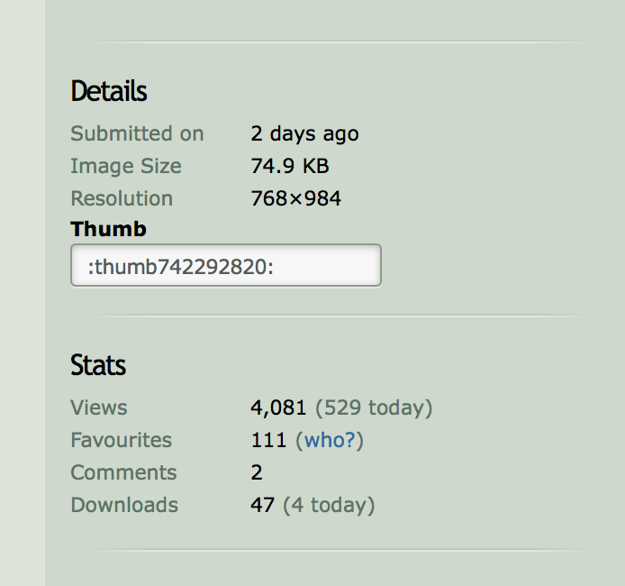

Buckle up, I’m about to tell you about the weirdest thing that’s ever happened to me because of my height.
On April 27 I woke up to several emails, 50+ new instagram followers, facebook friend requests, and twitter follows. I’m not a huge social media person so this was really unusual for me. A lot of the new followers looked fake. I went about my day just curious about where all this attention was coming from, but didn’t investigate yet because I was busy at work.
Many of the emails I received were about this blog post, where I wrote about my experiences being tall in Taiwan. I checked Google Analytics, and overnight, this post was viewed 1,500 times! I couldn’t see where the traffic was coming from, but I knew my page got posted somewhere else. I wasn’t too concerned since a few of my other posts have been linked on other websites for various reasons.
One of the emails I received was from a woman named Shelynne Holt, a “freelance talent scout”, who wanted me to come to LA to model some leggings for a new brand that sells to women over 6’2. She told me it was hard to find tall women to model the leggings for. This set off alarm bells in my head, and I replied to them to ask how they got my email address. She told me someone she casted told her about me and my blog. I knew immediately this was a scam, and several other details in the email didn’t make sense either. I did some digging and Shelynne Holt was actually a basketball player who lives in Europe now, so I messaged her on instagram and she told me it wasn’t her. I kept replying to the fake Shelynne Holt, who gave me the photographer’s manager’s phone number. I was supposed to call him and get more details and figure out when to come to LA. They gave me the name of a well-known photographer who I also messaged on instagram, and he said it was a scam too.
At this point I was even more intrigued since I had no idea what they wanted from me. I used my Google Voice number and texted them a few times but stopped after they insisted on calling me instead of texting.
I still don’t know what they wanted from me, but it seemed like some sort of elaborate scam.
A few days later I finally found where my blog post was getting viewed from - a tall fetishist DeviantArt page. I didn’t even know that DeviantArt still existed! They posted a photo of me from the blog post, where I was standing in my Taiwanese family’s beach house and the ceiling was exactly my height. It was a cute, innocent photo, but it somehow had more likes and downloads then even the other photos of actual tall models. In only a few days 47 people downloaded the image and 4000 people had viewed it. I knew tall fetishists existed but I didn’t know there were so many!
I did some more searching and I was also on a few different tall fetishist tumblrs. I as a little disgusted and I immediately messaged all of them to take it down, and weirdly enough they were all very kind and obliged.
To this day I occasionally still get instagram follows from tall fetishist accounts, but I just block them. I wish this all didn't happen but it makes for an interesting story at least!
Questions? Comments? Don't hesitate to contact me!